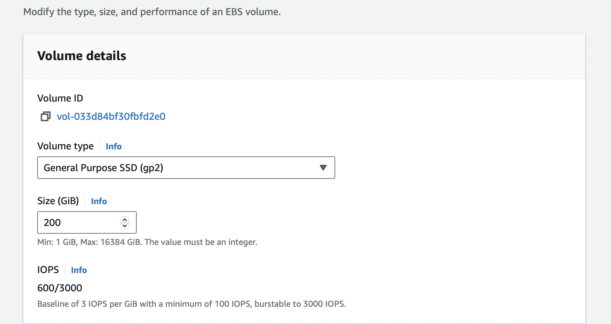
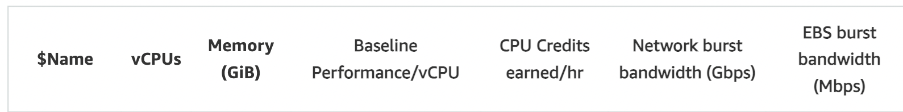
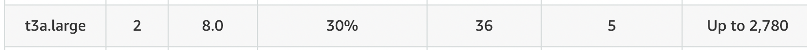
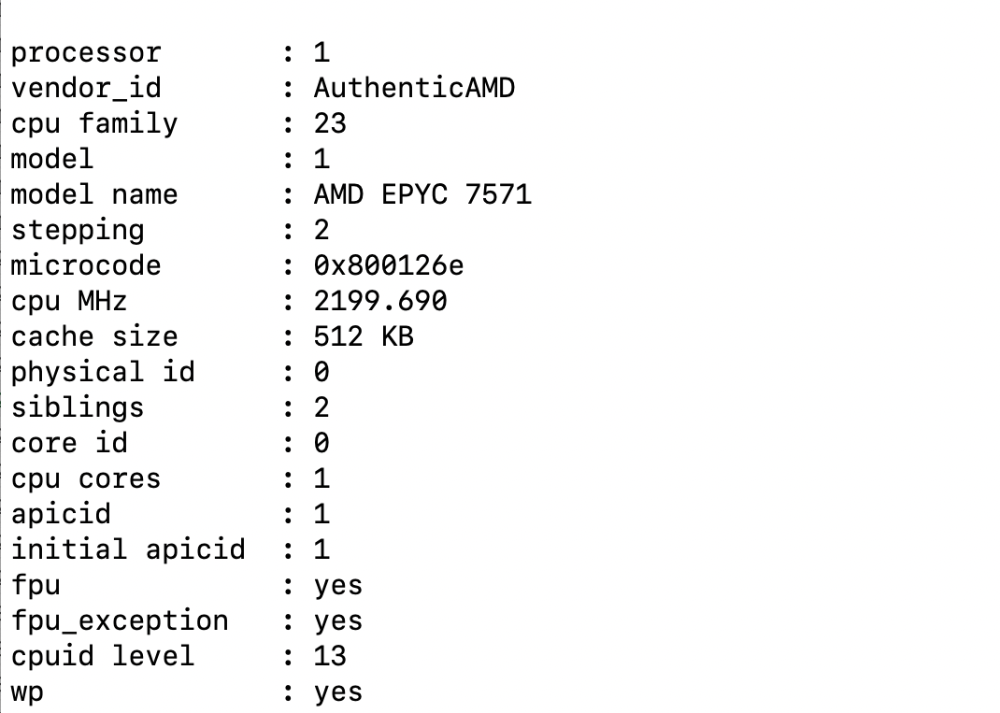
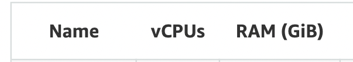
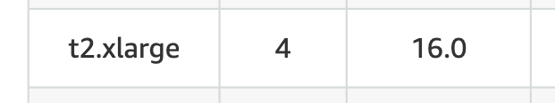
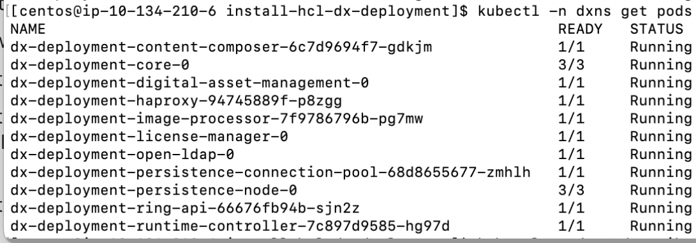

Performance Sizing Guidance for Rendering with a Small Configuration
DX Rendering Sizing Performance Tests overview
DX Sizing is one of the goals of DX performance tests. DX Sizing aims to identify the reliable K8s environment for DX small, medium, and large configurations. This topic presents the important KPIs (for example, number of concurrent users, average response time, and throughput) in small configurations. A similar approach will be applied for medium and large configurations. This topic also discusses how adjustments to the pod configuration can make significant improvements in the responsiveness of the system.
This sizing work started with rendering scenarios of WCM, Portlets, and DAM with a rendering setup enabled in AWS/Native-Kube. The Apache JMeter tool was used for performance tests.
Conclusion
This initial performance guidance aims to understand how the ratios of key pod limits can improve the rendering response time in a simple single pod system. This is an important step before attempting to illustrate the impact of scaling of pods.
- Changes to the pod limits for the following Pods significantly improve the responsiveness of the setup and enables the system to handle more users.
| Pod Name | Minimum Number of Pods | Container | Container Image | Container CPU Request and Limit | Container Memory Request and Limit |
|---|---|---|---|---|---|
| core | 1 | core | core | 3000m | 5000Mi |
| ringApi | 1 | ringApi | ringApi | 500m | 512Mi |
| haproxy | 1 | haproxy | haproxy | 700m | 1024Mi |
- These modifications resulted to better Response Time and Throughput by 50 percent. Detailed data are shown in the next sections.
DX small config helm values in hcl-dx-deployment
To see the small-config-values.yaml file in the hcl-dx-deployment helm chart, refer to the following steps:
-
Download the helm chart from FlexNet or Harbor.
-
Unpack the TGZ file (hcl-dx-deployment-XXX.tgz).
-
In the unpacked folder, navigate to this structure to go to the small-config-values.yaml: hcl-dx-deployment/value-samples/small-config-values.yaml.
Customer Rendering Scenario details
| Concurrent users | Existing WCM pages | Existing DAM Content |
|---|---|---|
| Small – 1000 users | 20 | 2k |
| Medium – 10000 users | 200 | 10k |
| Large – 100000 users | 2000 | 50-100k |
Environment
AWS/Native Kube
- EC2 instance is running on a native kubernetes platform with the DX images installed and configured.
- In AWS/Native Kube, the test started with the minimal EC2 instance with a single Node.
- The tests used a remote DB2 instance.
[Small Configuration] - [c5.2xlarge]


- Processor details

- Volume details

DB2 instance
- Remote DB2 - [t3a.large]


- Processor details

- Volume details

JMeter agents
- JMeter instance - [t2.xlarge]
- To execute the tests, a distributed AWS/JMeter agents setup consisting of one master and two slaves was used.


- Processor details

- Network details
- Volume details

Authoring Details for small config in rendering sizing
- To perform rendering tests, the systems must be set up first. This section provides details of WCM, DAM, and Portlets authoring.
WCM Default Test Data - 20 pages
WCM test data characteristics
- The default test data has a WCM design library called "PerformanceTestDesign" and five content libraries named "PerformanceTestContent01" to "PerformanceTestContent05".
-
Each content library contains four levels of site areas, with four site areas per level. Only the 256 "leaf" site areas contain content.
-
Each leaf site area contains ten content items, for a total of 12,800 content items across the libraries.
-
Half of the content items are visible to "Anonymous" and "All Authenticated" users.
-
The other half are visible only to members of ten groups per content item. These ten groups are spread out among the 500 groups assumed to exist in the test LDAP (and assumed to be called "Group0000" through "Group0499").
-
Half of the content items (spread evenly over each type described above) are profiled with the keyword "MENU".
-
There are 20 test portal pages created under the label "PerformanceTest". Each has a friendly URL in the form "
/perf/page-xx". -
Each page contains six WCM Viewer portlets that show content below one of the twenty top-level site areas. For example, Pages 01 to 04 show content from site areas "SA01" through "SA04" in library "PerformanceTestContent01", and pages 05 to 08 show content from site areas "SA01" through "SA04" in library "PerformanceTestContent02" etc.
-
Four of the portlets on each page show single content items. For page 01, these are the first content items in site areas "SA01.01.01.01", "SA01.02.01.01", "SA01.03.01.01", and "SA01.04.01.01" respectively. Other pages follow the same pattern.
-
Another portlet on each page shows a navigator of site areas and content items below the same top-level area.
-
The final portlet on each page shows a menu of items and is scoped to the top-level site area. It also selects only those items profiled with the "MENU" keyword.
-
A total of 99999 users were added to openLDAP as authenticated users.
DAM Default Test Data - 2,500 assets
-
2,500 assets were uploaded. These include images (136kb, .jpg), documents (199kb, .docx), and videos (1.1mb, .mp4) to preheat. After preheating with 2,500 assets, 15 assets were uploaded and rendered for one hour.
-
Details of 15 assets were uploaded for rendering.
-
There are 19 URLs in total, three of which are custom URLs, eight are uuid URLs, and eight are friendly URLs which are combinations of original, tablet, smartphone, and desktop renditions.
| Asset | Type | Size |
|---|---|---|
| Image | .jpg/png/tif | 155kb, 2mb,5mb, 500kb, 100 kb, 2 mb,300 kb |
| Video | mp4/webm | 5 mb, 199kb,200kb , 2 mb,199kb |
| Document | docx/xlsx/pptx | mp4- 1mb, 15mb, 100mb, webm- 2 mb |
Note
For DAM, only anonymous rendering is available.
Pages and Portlets Default Test Data - 8 pages
There is a total of eight pages with portlets that are commonly used by customers. Authoring and rendering were done by giving access to both Anonymous and Authenticated Users. The same users were added in openLDAP for WCM rendering. All authenticated users are assigned the User role.
As part of authoring, pages and portlets were added manually. The following list shows the details of portlets of authoring in every page:
- Page 1 - 2 Articles
- Page 2 - 2 Rich text
- Page 3 - Login portlet
- Page 4 - Information Portlet(JSR) - JSP file - jsp/oob/welcome.jsp
- Page 5 - Search Centre portlet
- Page 6 - Custom JSF portlet with simple form
- Page 7 - Script Application portlet --> Added JavaScript Functions, Date and Time object examples
- Page 8 - Added all above 7 portlets in this page
After completing the authoring steps, the anonymous portal user and authenticated users (added to openLDAP) must render the pages. Every page request uses /GET API call (for example, /wps/portal/portletsperf/page1) and there is a response assertion in sampler to validate the content html in response body.
Combined DX rendering of WCM, DAM, and Pages and Portlets
For rendering sizing, all rendering JMeter scripts of WCM, DAM, and Pages and Portlets are combined. See the following section for details of load distribution.
Load Distribution
- WCM - 40 %
- DAM - 30 %
- Pages and Portlets - 30 %
Pods in native-kube deployment are 1:1 in small config

Results Summary
The following stages were conducted starting with default kube configuration.
Stage 1
- DX combined run executed with default minimal deployments as mentioned in the following helm values.
- No issues found with a user load of up to 500.
- Errors are seen at a user load of 600. This total error is around five percent.
stage-1 Helm Values
Requests Limits
| Component | cpu(m) | memory(Mi) | cpu(m) | memory(Mi) |
|---|---|---|---|---|
| contentComposer | 100 | 128 | 100 | 128 |
| core | 2000 | 4096 | 4000 | 6144 |
| digitalAssetManagement | 500 | 1536 | 500 | 1536 |
| imageProcessor | 200 | 2048 | 200 | 2048 |
| openLdap | 200 | 768 | 200 | 768 |
| persistenceNode | 500 | 1024 | 500 | 1024 |
| persistenceConnectionPool | 500 | 512 | 500 | 512 |
| ringApi | 100 | 256 | 100 | 256 |
| runtimeController | 100 | 256 | 100 | 256 |
| haproxy | 200 | 300 | 200 | 300 |
| licenseManager | 100 | 300 | 100 | 300 |
| Total | 4500 | 11224 | 6500 | 13272 |
Results Overview
| AWS/Native-Kube | Test-6 | Test-7 (after tuning - core, ring api, haproxy) |
|---|---|---|
| Test Time | July 21st IST 12:30 am - 1:30 am | July 27th IST 14:08 pm - 15:12 pm |
| Total samples | 66959 | 918415 |
| Concurent Users | 600(WCM=240+DAM=180+PNP=180) | 600(WCM=240+DAM=180+PNP=180) |
| Total Throughput (transactions/sec) | 110.3 | 238.18 |
| Total Avg response time (in milli seconds) | 4671 | 994.89 |
| CPU Usage | 25% | 52.36% |
| Memory Usage | 56% | 62.23% |
| Disk Read IO | 0 B/s | |
| Disk Write IO | 13.65 io/s | |
| DAM EventLoop lag (in milli seconds) | 16.14 | |
| Ring EventLoop lag (in milli seconds) | 450 | 5.19 |
| Error | 4.87% | 0 |
| TimeDuration | 3600 | 3850 |
| Top 5 request samples (avg response time in ms) | Top 5 request samples (avg response time in ms) | |
| Get video - mp4 1.1 mb custom url - curlmp41.1mb. (25044) | Get video - mp4 15mb - idmp415mb (6253.29) | |
| Get image - jpeg 155 kb custom url - curljpg155kb (23851) | Get video - mp4 1.1 mb custom url - curlmp41.1mb (5512.89) | |
| Get video - mp4 15mb - idmp415mb - (23620) | Get doc - pdf - 5mb - friendly url - Desktop - furlpdf5mb (5296.89) | |
| Get doc - pdf 171 kb custom url - curlpdf171kb. (23011) | Get image - jpeg 155 kb custom url - curljpg155kb (5128.01) | |
| Initial Page Request (21145) | Get video - webm 2mb - friendly url - furlwebm2mb (4895.61) |
Observations
-
For a user load of 600, there is an http response code - 503 service unavailable errors in test.
-
All errors are from WCM and Pages and Portlets, not from DAM.
-
Total Average response time increases exponentially with vload.
-
Event loop lag for Ring API pod is also on the higher end (~400 ms for a user load of 500).
-
No pod restarts observed.
Stage 2
From stage-1 observations, limits of core, ring API, and HA proxy pods were tuned one by one to see if no errors occurred during a user load of 600.
See the following section for the tuned helm values.
stage-2 Helm Values
Requests Limits
| Component | cpu(m) | memory(Mi) | cpu(m) | memory(Mi) |
|---|---|---|---|---|
| contentComposer | 100 | 128 | 100 | 128 |
| core | 3000 | 5000 | 3000 | 5000 |
| digitalAssetManagement | 500 | 1536 | 500 | 1536 |
| imageProcessor | 200 | 2048 | 200 | 2048 |
| openLdap | 200 | 768 | 200 | 768 |
| persistenceNode | 500 | 1024 | 500 | 1024 |
| persistenceConnectionPool | 500 | 512 | 500 | 512 |
| ringApi | 500 | 512 | 500 | 512 |
| runtimeController | 100 | 256 | 100 | 256 |
| haproxy | 700 | 1024 | 700 | 1024 |
| licenseManager | 100 | 300 | 100 | 300 |
| Total | 6400 | 13108 | 6400 | 13108 |
Results Overview
| AWS/Native-Kube | Test-6 | Test-11 (after tuning - core, ring api, haproxy) |
|---|---|---|
| Test Time | July 21st IST 12:30 am - 1:30 am | July 28th IST 12:12 pm to 13:17 pm |
| Total samples | 66959 | 692505 |
| Concurent Users | 600(WCM=240+DAM=180+PNP=180) | 600(WCM=240+DAM=180+PNP=180) |
| Total Throughput (transactions/sec) | 110.3 | 179.63 ± 16.59 |
| Total Avg response time (in milli seconds) | 4671 | 2063.32 ± 308.33 |
| CPU Usage | 25% | 39.72% |
| Memory Usage | 56% | 61.70% |
| Disk Read IO | 0 io/s | |
| Disk Write IO | 13.04 io/s | |
| DAM EventLoop lag (in milli seconds) | 16.1 | |
| Ring EventLoop lag (in milli seconds) | 450 | 4.57 |
| Error | 4.87% | 0 |
| TimeDuration | 3600 | 3850 |
| Top 5 request samples (avg response time in ms) | Top 5 request samples (avg response time in ms) | |
| Get video - mp4 1.1 mb custom url - curlmp41.1mb. (25044) | Initial Page Request (11235.13) | |
| Get image - jpeg 155 kb custom url - curljpg155kb (23851) | Get video - mp4 1.1 mb custom url - curlmp41.1mb (6791.20) | |
| Get video - mp4 15mb - idmp415mb - (23620) | Get image - jpeg 155 kb custom url - curljpg155kb (6123.23) | |
| Get doc - pdf 171 kb custom url - curlpdf171kb. (23011) | Get doc - pdf 171 kb custom url - curlpdf171kb (6037.59) | |
| Initial Page Request (21145) | Get video - mp4 15mb - idmp415mb (5931.95) |
| AWS/Native-Kube | Test-10 (after tuning - core, ring api, haproxy) |
|---|---|
| Test Time | July 27th IST 19:58 pm to 20:58 pm |
| Total samples | 610496 |
| Concurent Users | 1000(WCM=400+DAM=300+PNP=300) |
| Total Throughput (transactions/sec) | 169.19 ± 0.68 |
| Total Avg response time (in milli seconds) | 5578.84 ± 32.01 |
| CPU Usage | 39% |
| Memory Usage | 64% |
| Disk Read IO | 0 io/s |
| Disk Write IO | 14.45 io/s |
| DAM EventLoop lag (in milli seconds) | 20.4 |
| Ring EventLoop lag (in milli seconds) | 6.6 |
| Error | 0 |
| TimeDuration | 3600 |
| Top 5 request samples (avg respone time in ms) | |
| Initial Page Request (30396.43) | |
| Get video - mp4 1.1 mb custom url - curlmp41.1mb (14561.34) | |
| Get image - jpeg 155 kb custom url - curljpg155kb (14448.63) | |
| Get doc - pdf 171 kb custom url - curlpdf171kb (14370.48) | |
| Get video - mp4 15mb - idmp415mb (10716.05) |
Observations
-
No errors observed and no pods restarted during the test.
-
Total average response time, total throughput, and Event loop lag for Ring API pod improved significantly.
-
Top five requests with higher response time are from DAM rendering and WCM inital page request.